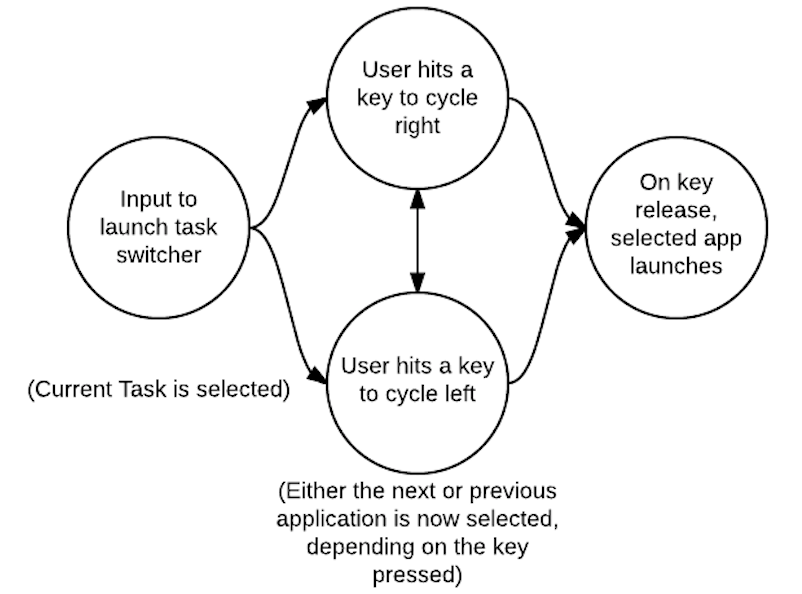

Typical Appearance
Although there are many ways to switch between tasks, most operating systems have a similar feature that portrays all currently open programs (or their respective icons) in thumbnails across the screen. They typically prioritize the screen, displaying themselves in front of any and all open windows.
Windows 10

OSX El Capitan

iOS 9
Typical Behavior
First, it is important to note that there is a long list of ways a user can switch between tasks. One way would be to use the mouse, locate the task launcher, hover over the task one wants to open, and click. Information on the task launcher can be found here.
Another more efficient way, which is seen on most Operating Systems, including mobile, is to press and hold a set of keys (i.e. Windows: Alt + Tab ; OSX: Cmd + Tab ; iOS 9 double tap the Home button). While still holding the Cmd or Alt key, the user can keep tapping on Tab to quickly sift through currently open programs. Once the user lets go of all keys, the program that was selected will open.
It is good to note that this is a very efficient way to jump back and forth between two programs. The end goal is to switch between tasks, and the quicker and more effortless the process is, the better it is for the user. There are many different shortcuts, and other platform-specific ways to allow for further efficient manipulation (i.e. hiding an app) that will be mentioned under the Platform-Specific Instances section.
Events
The most relevant task launcher event is
An event is something that can happen to a user interface component. They are both conceptual and highly concrete in that events very frequently translate directly into a user interface component’s API.
The most relevant button event is the click. A click event indicates that the user has
triggered the button. Secondary events include hover, indicating that a pointing device is explicitly
within the button’s bounds.
State Diagram

Note that only one task can be selected at a time, so when one task is selected all the others are not. A task must be selected in order fo it to be launched, which occurs on key release. However, if the task switcher is active on the screen, a user can always interact with each task, and they are never disabled if the task launcher is open. Please see Platform-Specific Instances for more states.
Component in Action
Below is a video showing off the task switcher in OSX. The taskbar pops up, taking priority of the screen, and the user can navigate to the left or to the right, quit tasks, hide them, or quickly "alt/tab" back and forth between a pair of tasks.
Variants
Switching tasks is a standard operation on most devices. Below is a list illustrating the broad ways to accomplish task switching:
- Mission Control , an OSX variant, displays all open windows in thumbnail view across the screen. The difference is that there are no shortcuts to navigate between currently open windows, and you get a preview of the conent of each open task, rather than just the task icon. They are not aligned neatly across the middle of the screen, but scattered. A user can click on any task to switch to it. More information can be found in Platform-Specific Instances.
- Most smartphones have a task switcher. When launched, gesture-based controls allows the user to cycle through all open apps, and when they find the one they want to open, they tap on it to open it.
- Using Voice Navigation (i.e. Siri) and vocally ask to "open" a specific task.
Priority Metrics
The learnability of task switching should be quick, as it is a single input (whether it is a gesture, a double tap of a button, or several key entries at once). It may take longer to discover all the features in a task switcher, like hiding or quitting applications, but it's main function of switching tasks should be intuitive. Once the task switcher is active, there should be no confusion and no series of extra steps to accompish switching to a different task.
Efficiency is arguably the most important usability measure, as there should be no delay after launch. Because efficiency is of such high priority, there should be almost no mistakes (errors) from a user to accidentally open the wrong program, as the program selected should be the only one that is switched to.
Memorability would be the biggest hurdle, as user needs to memorize the input to launch it. Once that one input is memorized, there should not be any confusion on what to do next.
Satisfaction is of high priority, and is closely tied to efficiency. The user should feel that switching tasks is effortless, and feel a sense of "flow" as they are hopping between tasks.
Key Characteristics
This section is for describing “what makes for a good your component here?” Most likely, this is an amalgam of guidelines documents and platform-independent interaction design principles.
Feedback
Perhaps the most important interaction design principle that a button must follow is feedback. Users must never doubt whether:
- they did positively trigger a button (and thus its associated action)
- they successfully cancelled the triggering of a button, due to changing their minds midway through the action that triggers the button